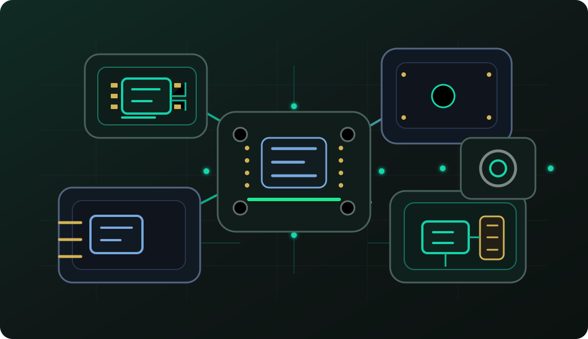
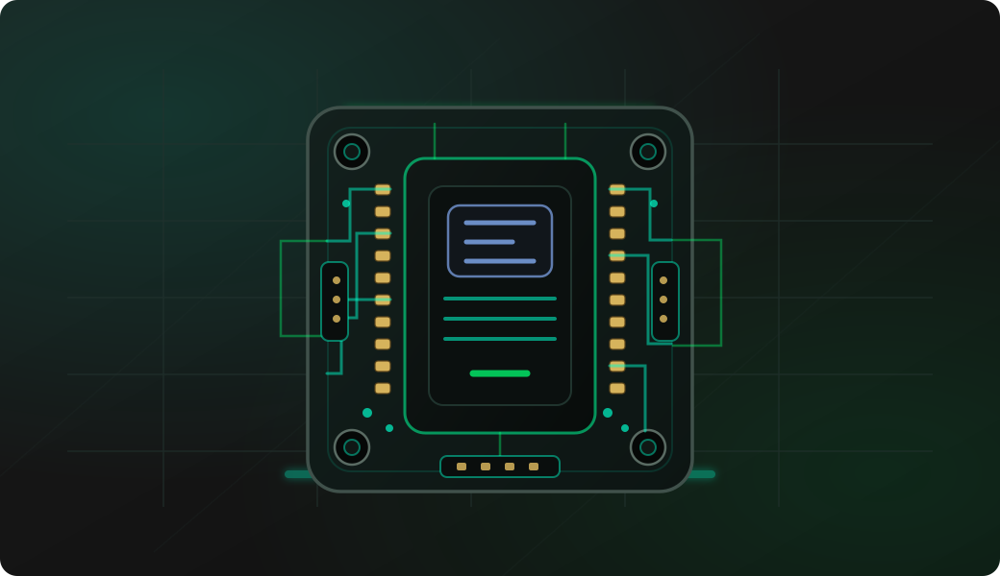
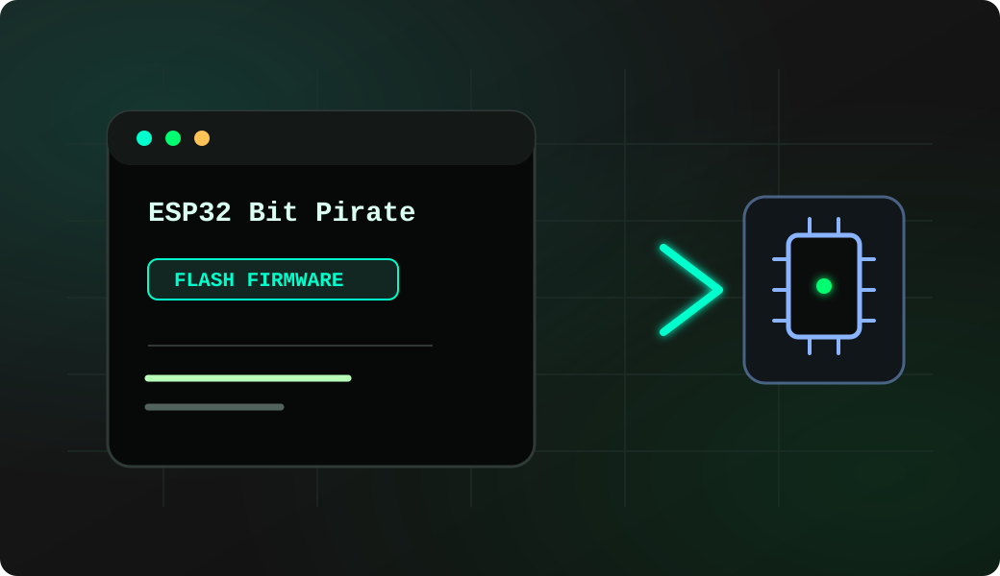
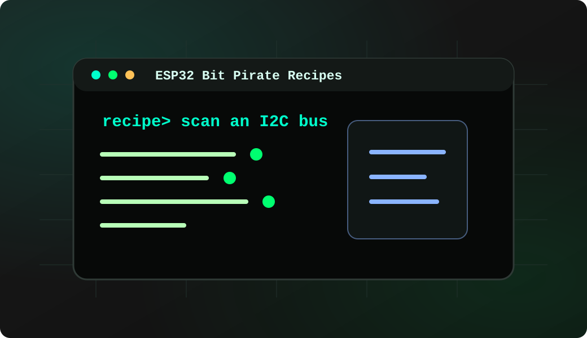
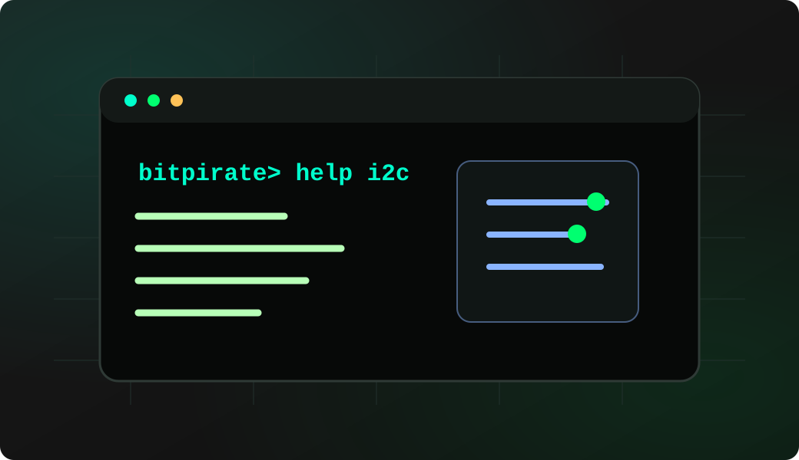

Firmware
ESP32 Bit Pirate
C++ firmware for wired buses, wireless protocols, USB adapters, device shells and hardware debugging commands.
View source ↗open-source firmware · browser tools · recipes
ESP32 Bit Pirate turns compatible ESP32 boards into a practical multi-protocol workbench for electronics learning, firmware exploration, debugging and repeatable hardware tests.

project
The Bit Pirate firmware is complemented by scripting, hardware dock, extension, adapters, browser tools, documentation and practical embedded workflows to enable comprehensive hardware debugging and development with serial interfaces or Wi-Fi connectivity.
ecosystem
The project is more than a C++ firmware repo: it includes browser workflows, documentation, scripts, boards and companion hardware.
Firmware
C++ firmware for wired buses, wireless protocols, USB adapters, device shells and hardware debugging commands.
View source ↗
Web Flasher
Flash ESP32 Bit Pirate and companion firmware for supported devices directly from your web browser.
Flash firmware →
Web Tools
Desktop-style tools for Web Serial, SPI flash, AVR, STM32, ESP32, SUMP logic capture and BPIO2 GPIO/I2C/SPI.
Open tools →
Recipes
Searchable task pages that explain wiring, commands and helps to learn and practice the firmware features.
Read recipes →
Documentation
Mode pages, references for every command, modules wiring, tips, web UI and adapter workflows.
Open wiki ↗
Automation
Use Python workflows to automate scans, protocol checks, captures, reports and repeatable lab tasks.
Open Python Scripting Lab →
Modules
Wiring guides for CC1101, SPI flash, PN532, nRF24L01, MCP2515 and other bench parts.
Explore modules →
Dock & adapters
A carrier-board direction for adapters, accessories and level logic from 1.8V to 5V.
Explore hardware →
Supported devices
Compare Cardputer, S3 DevKit, T-Embed, T-Display, AtomS3 Lite, StickS3, StampS3 and XIAO ESP32-S3 before flashing.
Compare boards →start here
Use the Web Flasher, open the Web Serial terminal, then explore, script and interact with hardware directly.

Flash · Web Flasher
Choose a supported ESP32 board and flash the firmware without setting up PlatformIO or a local toolchain.
Open Web Flasher →
USB Web Tools
Access the terminal CLI directly from your browser without additional software.
Browse Web Tools →
Docs · Recipes
Short practical workflows for I2C, SPI, UART, GPIO, flash, infrared, Sub-GHz, USB, network and debug use cases.
Explore Recipes →
Reference · Command docs
Use the Wiki as the reference layer when you need exact commands, mode behavior, board notes or adapter details.
Open Wiki ↗
Automate · Python scripts
Automate serial sessions, protocol checks, scans, captures and reports once a manual workflow becomes useful.
Open Python Scripting Lab →protocol workbench
Use the firmware and browser tools as a compact bench for common wired buses, firmware extraction, signal capture and wireless protocol exploration.
Scan devices, read registers, dump memories, bridge serial ports, generate pulses, inspect pin states and test embedded boards without writing a custom sketch first.
Flash supported ESP32 boards, read SPI NOR flash, program AVR targets, explore STM32 bootloader or ST-Link flows and keep repeatable firmware backup tasks in the browser.
Use SUMP logic analyzer capture, BPIO2 GPIO/I2C/SPI control, USB CDC adapter modes and Python scripts when manual debugging needs to become a repeatable test.
Explore Wi-Fi, BLE, infrared, Sub-GHz, RFID and companion board features alongside wired protocols so a single project can cover many real lab situations.
quick answers
Short answers for searchers who land here before opening the Wiki, Repo, Recipes or Web Tools.
ESP32 Bit Pirate is an open-source ESP32-S3 firmware ecosystem that turns compatible boards into a multi-protocol workbench for embedded debugging, electronics learning and hardware exploration.
It covers I2C, SPI, UART, HD UART, GPIO/DIO, PWM/servo, 1-Wire, 2-Wire smartcards, 3-Wire, SLE4442, JTAG, SWD, CAN, I2S, USB CDC/HID/MSC/Host, LED/FastLED control, infrared, Sub-GHz/CC1101, Wi-Fi, BLE, RF24, FM/RDS, Ethernet and cellular AT workflows, plus scanning, dumping, sniffing, bridging, flashing and logic capture.
Use the same CLI in three ways: directly over USB Serial, through the Web CLI over Wi-Fi, or with the browser-based Web Serial terminal. Choose USB Serial for a wired bench session, Web CLI for network access, or Web Serial when you want to work directly from a compatible browser.
No. The firmware targets several ESP32-S3 boards and companion hardware paths, including Cardputer, DevKit-style boards, T-Embed, T-Display, StickS3, StampS3 and other supported devices.
For many common bench tasks, yes. The browser tools cover serial terminals, ESP32 flashing, SPI flash programming, AVR programming, STM32 workflows and SUMP logic capture without installing a full desktop toolchain.
Yes. You can start from the CLI or Web Tools for manual debugging, then move repeatable checks to Python scripts for scans, protocol tests, captures, reports and lab automation.
Yes. Any ESP32-S3 board with at least 8 MB of flash can run ESP32 Bit Pirate; PSRAM is not required. Check the default pin mapping before wiring a target, because connector and GPIO layouts differ between boards.
The ESP32 itself uses 3.3 V GPIO logic. Use the Dock’s level-adaptation path for compatible 1.8 V to 5 V target logic, verify the target voltage before connecting, and do not drive an ESP32 GPIO directly outside its safe logic range.
Yes. The interface is designed for beginners and experienced users alike. Most tasks can be performed directly from the browser with guided workflows, clear controls and no complex software installation.
The software is free to use, and compatible hardware boards are available from around €5 to €60 depending on the features you need. This makes it an affordable option for makers, students and professional labs.
community project
ESP32 Bit Pirate is open source. Browse the source, report issues, contribute commands, document recipes, or reuse the browser-tool patterns for new adapters.